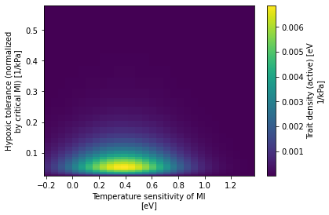

Defining the Aerobic Safety Margin
Contents
Defining the Aerobic Safety Margin¶
%load_ext autoreload
%autoreload 2
from itertools import product
import cmocean
import intake
import matplotlib.pyplot as plt
import metabolic as mi
import numpy as np
import thermodyn
import util
import xarray as xr
Load World Ocean Atlas data¶
Access intake catalog for remote data.
catalog = intake.open_catalog("data/catalogs/woa2018-catalog.yml")
catalog
woa2018-catalog:
args:
path: data/catalogs/woa2018-catalog.yml
description: World Ocean Atlas, v2018
driver: intake.catalog.local.YAMLFileCatalog
metadata: {}
Generate merged dataset¶
Loop over variables of interest; generate a combined dataset.
ds_list = []
variables = dict(
oxygen=dict(keep_vars=['o_an', 'depth_bnds']),
temperature=dict(keep_vars=['t_an']),
salinity=dict(keep_vars=['s_an']),
)
for variable, info in variables.items():
ds_list.append(
catalog[variable](time_code=0)
.to_dask()[info['keep_vars']]
.isel(time=0, drop=True)
.sel(depth=slice(0, 1000.0))
)
ds = xr.merge(ds_list)
depth = xr.full_like(ds.t_an, fill_value=1.0) * ds.depth
ds['pO2'] = thermodyn.compute_pO2(ds.o_an, ds.t_an, ds.s_an, depth, gravimetric_units=True)
ds['dz'] = ds.depth_bnds.diff('nbounds').squeeze()
ds['area'] = util.compute_grid_area(ds)
ds['volume'] = (ds.dz * ds.area).where(ds.t_an.notnull())
ds.volume.attrs['long_name'] = 'Volume'
ds.volume.attrs['units'] = 'm^3'
ds.lat.attrs['long_name'] = 'Latitude'
ds.lat.attrs['units'] = '°N'
ds = ds.compute()
ds
<xarray.Dataset>
Dimensions: (depth: 47, lat: 180, lon: 360, nbounds: 2)
Coordinates:
* lat (lat) float32 -89.5 -88.5 -87.5 -86.5 ... 86.5 87.5 88.5 89.5
* lon (lon) float32 -179.5 -178.5 -177.5 -176.5 ... 177.5 178.5 179.5
* depth (depth) float32 0.0 5.0 10.0 15.0 ... 850.0 900.0 950.0 1e+03
Dimensions without coordinates: nbounds
Data variables:
o_an (depth, lat, lon) float32 nan nan nan nan ... 303.3 303.3 303.3
depth_bnds (depth, nbounds) float32 0.0 2.5 2.5 ... 975.0 975.0 1.025e+03
t_an (depth, lat, lon) float32 nan nan nan ... -0.1925 -0.1925
s_an (depth, lat, lon) float32 nan nan nan nan ... 34.91 34.91 34.91
pO2 (depth, lat, lon) float32 nan nan nan nan ... 21.16 21.16 21.16
dz (depth) float32 2.5 5.0 5.0 5.0 5.0 ... 50.0 50.0 50.0 50.0 50.0
area (lat, lon) float64 1.079e+08 1.079e+08 ... 1.079e+08 1.079e+08
volume (depth, lat, lon) float64 nan nan nan ... 5.395e+09 5.395e+09
Attributes: (12/49)
Conventions: CF-1.6, ACDD-1.3
title: World Ocean Atlas 2018 : mole_concentrat...
summary: Climatological mean dissolved oxygen for...
references: Garcia, H. E., K. Weathers, C. R. Paver,...
institution: National Centers for Environmental Infor...
comment: global climatology as part of the World ...
... ...
publisher_email: NCEI.info@noaa.gov
nodc_template_version: NODC_NetCDF_Grid_Template_v2.0
license: These data are openly available to the p...
metadata_link: https://www.nodc.noaa.gov/OC5/woa18/
date_created: 2019-07-29
date_modified: 2019-07-29 Peak and verify¶
Make a few plots to ensure that every is as expected.
ds.dz.plot(y='depth', yincrease=False, marker='o');

ds.volume.sel(lon=179.5).plot(yincrease=False);

ds.pO2.sel(lon=179.5).plot(yincrease=False, vmax=25);

ds.pO2.sel(depth=0.0).plot();

ds.pO2.sel(depth=1000.0).plot();

ds.t_an.sel(lon=179.5).plot(yincrease=False);

ds.s_an.sel(lon=179.5).plot(yincrease=False);

Load trait space data¶
curator = util.curator_local_assets()
cat = curator.open_catalog()
ds_trait_space = cat['trait-space-hires'].to_dask().load()
ds_trait_space.trait_spc_active.plot();

Volume of viable habitat in trait-space¶
dso_vol = xr.Dataset()
for v in ['trait_spc_active', 'trait_spc_resting']:
trait_space = ds_trait_space[v]
metabolic_baseline = trait_space.attrs['metabolic_baseline']
hypoxic_tol, temp_sens = trait_space.dims
vol = xr.full_like(trait_space, fill_value=0.0)
for i, A_parm in enumerate(trait_space[hypoxic_tol].values):
for j, Eo in enumerate(trait_space[temp_sens].values):
Phi = mi.Phi(ds.pO2, ds.t_an, Ac=A_parm, Eo=Eo, dEodT=mi.dEodT_bar)
viable_trait_mask = xr.where(Phi > 1, 1.0, 0.0)
vol[i, j] += (ds.volume * viable_trait_mask).sum(['depth', 'lat', 'lon'])
vol_percent = 100.0 * vol / ds.volume.sum()
vol_percent.attrs['long_name'] = 'Ocean volume'
vol_percent.attrs['units'] = '%'
vol *= 1e-6 # convert to 10^6 m^3
vol.attrs['units'] = '10$^6$ m$^3$'
name = f'vol_habitat_{metabolic_baseline}'
dso_vol[name] = vol
dso_vol[f'{name}_percent'] = vol_percent
dso_vol
<xarray.Dataset>
Dimensions: (Ac: 30, Eo: 30, Ao: 30)
Coordinates:
* Ac (Ac) float64 0.0278 0.0308 ... 0.4723 0.5226
* Eo (Eo) float64 -0.1718 -0.1238 ... 1.172 1.22
* Ao (Ao) float64 0.0635 0.0706 ... 1.215 1.35
Data variables:
vol_habitat_active (Ac, Eo) float64 0.0 0.0 ... 3.271e+11
vol_habitat_active_percent (Ac, Eo) float64 0.0 0.0 0.0 ... 97.5 97.26
vol_habitat_resting (Ao, Eo) float64 6.483e+10 ... 3.356e+11
vol_habitat_resting_percent (Ao, Eo) float64 19.28 19.48 ... 99.78 99.79dso_vol.vol_habitat_active.plot.contourf(levels=30);

dso_vol.vol_habitat_resting.plot.contourf(levels=30);

dso_vol.vol_habitat_active_percent.plot.contourf(levels=30);

plt.contourf(
dso_vol.vol_habitat_active_percent.Eo,
1 / dso_vol.vol_habitat_active_percent.Ac,
dso_vol.vol_habitat_active_percent,
levels=np.arange(0, 102.5, 2.5),
)
cb = plt.colorbar()
plt.xlabel(util.attrs_label(dso_vol.Eo.attrs))
inv_attrs = dict(**dso_vol.Ac.attrs)
inv_attrs['long_name'] = 'Inverse of hypoxic tolerance'
inv_attrs['units'] = 'kPa'
plt.ylabel(util.attrs_label(inv_attrs))
cb.ax.set_ylabel(util.attrs_label(vol_percent.attrs));

Examine trait frequency as a function of latitude¶
try:
cluster
client
except:
cluster, client = util.get_ClusterClient(memory='16GB')
cluster.scale(10)
client
/glade/work/mclong/miniconda3/envs/metabolic/lib/python3.7/site-packages/distributed/node.py:182: UserWarning: Port 8787 is already in use.
Perhaps you already have a cluster running?
Hosting the HTTP server on port 43715 instead
f"Port {expected} is already in use.\n"
Client
Client-d21f90b8-8b7e-11ec-9d74-3cecef1acc42
| Connection method: Cluster object | Cluster type: dask_jobqueue.PBSCluster |
| Dashboard: https://jupyterhub.hpc.ucar.edu/stable/user/mclong/calcs/proxy/43715/status |
Cluster Info
PBSCluster
fe289bca
| Dashboard: https://jupyterhub.hpc.ucar.edu/stable/user/mclong/calcs/proxy/43715/status | Workers: 0 |
| Total threads: 0 | Total memory: 0 B |
Scheduler Info
Scheduler
Scheduler-366b63a8-d94f-4770-8040-4598fb256308
| Comm: tcp://10.12.206.15:37719 | Workers: 0 |
| Dashboard: https://jupyterhub.hpc.ucar.edu/stable/user/mclong/calcs/proxy/43715/status | Total threads: 0 |
| Started: Just now | Total memory: 0 B |
Workers
def get_trait_freq_increment(A_parm, Eo, ATmax_ij, trait_space_wgt_ij):
if np.isnan(ATmax_ij):
return
# compute metabolic index
Phi = mi.Phi(ds.pO2, ds.t_an, A_parm, Eo, dEodT=mi.dEodT_bar)
trait_wgt = xr.where(Phi > 1, trait_space_wgt_ij, 0.0)
# loop over latitude and accumulate the frequency
ndx_bin = np.searchsorted(ATmax_bin_edge, ATmax_ij, side='left')
for j_lat in range(ds.sizes['lat']):
freq_j = (trait_wgt.isel(lat=j_lat) * ds.volume.isel(lat=j_lat)).sum()
ATmax_dist[ndx_bin, j_lat] = freq_j
hypoxic_tol_dist[i, j_lat] = freq_j
temp_sens_dist[j, j_lat] = freq_j
%%time
# construct an ATmax distribution with pre-defined bins
ATmax_bin_edge = np.arange(10, 64, 2)
ATmax_bin_c = np.vstack((ATmax_bin_edge[:-1], ATmax_bin_edge[1:])).mean(axis=0)
ATmax_bins = xr.DataArray(
ATmax_bin_c,
dims=('ATmax'),
coords={'ATmax': ATmax_bin_c},
)
lat_var = xr.full_like(ds.pO2.isel(lon=0, depth=0, drop=True), fill_value=0.0)
dsets = {}
for v in ['trait_spc_resting', 'trait_spc_active']:
# get trait space vars
trait_space = ds_trait_space[v]
metabolic_baseline = trait_space.attrs['metabolic_baseline']
ATmax = ds_trait_space[f'ATmax_{metabolic_baseline}']
hypoxic_tol, temp_sens = trait_space.dims
# initialize trait distributions
dso = xr.Dataset()
dso['ATmax_dist'] = ATmax_bins * lat_var
dso[f'{hypoxic_tol}_dist'] = trait_space[hypoxic_tol] * lat_var
dso[f'{temp_sens}_dist'] = trait_space[temp_sens] * lat_var
# loop over trait space and lat bands, sum trait frequency
for i, A_parm in enumerate(trait_space[hypoxic_tol].values):
for j, Eo in enumerate(trait_space[temp_sens].values):
if np.isnan(ATmax[i, j]):
continue
# compute metabolic index
Phi = mi.Phi(ds.pO2, ds.t_an, A_parm, Eo, dEodT=mi.dEodT_bar)
trait_wgt = xr.where(Phi > 1, trait_space[i, j], 0.0)
# loop over latitude and accumulate the frequency
ndx_bin = np.searchsorted(ATmax_bin_edge, ATmax[i, j], side='left')
for j_lat in range(ds.sizes['lat']):
freq_j = (trait_wgt.isel(lat=j_lat) * ds.volume.isel(lat=j_lat)).sum()
dso['ATmax_dist'][ndx_bin, j_lat] += freq_j
dso[f'{hypoxic_tol}_dist'][i, j_lat] += freq_j
dso[f'{temp_sens}_dist'][j, j_lat] += freq_j
# normalize so integral is 1.0
for key in dso.data_vars:
dso[key] /= dso[key].sum()
dsets[v] = dso
dsets
CPU times: user 13min 17s, sys: 2.03 s, total: 13min 19s
Wall time: 13min 43s
{'trait_spc_resting': <xarray.Dataset>
Dimensions: (ATmax: 26, lat: 180, Ao: 30, Eo: 30)
Coordinates:
* ATmax (ATmax) float64 11.0 13.0 15.0 17.0 19.0 ... 55.0 57.0 59.0 61.0
* lat (lat) float32 -89.5 -88.5 -87.5 -86.5 ... 86.5 87.5 88.5 89.5
* Ao (Ao) float64 0.0635 0.0706 0.0784 0.0871 ... 1.093 1.215 1.35
* Eo (Eo) float64 -0.1718 -0.1238 -0.0759 ... 1.124 1.172 1.22
Data variables:
ATmax_dist (ATmax, lat) float64 0.0 0.0 0.0 0.0 0.0 ... 0.0 0.0 0.0 0.0 0.0
Ao_dist (Ao, lat) float64 0.0 0.0 0.0 ... 2.564e-07 1.539e-07 5.131e-08
Eo_dist (Eo, lat) float64 0.0 0.0 0.0 ... 6.435e-07 3.863e-07 1.288e-07,
'trait_spc_active': <xarray.Dataset>
Dimensions: (ATmax: 26, lat: 180, Ac: 30, Eo: 30)
Coordinates:
* ATmax (ATmax) float64 11.0 13.0 15.0 17.0 19.0 ... 55.0 57.0 59.0 61.0
* lat (lat) float32 -89.5 -88.5 -87.5 -86.5 ... 86.5 87.5 88.5 89.5
* Ac (Ac) float64 0.0278 0.0308 0.034 0.0377 ... 0.4269 0.4723 0.5226
* Eo (Eo) float64 -0.1718 -0.1238 -0.0759 ... 1.124 1.172 1.22
Data variables:
ATmax_dist (ATmax, lat) float64 0.0 0.0 0.0 0.0 0.0 ... 0.0 0.0 0.0 0.0 0.0
Ac_dist (Ac, lat) float64 0.0 0.0 0.0 ... 1.772e-07 1.064e-07 3.546e-08
Eo_dist (Eo, lat) float64 0.0 0.0 0.0 ... 1.219e-06 7.318e-07 2.439e-07}
Results¶
Make plots of trait distributions as a function of latitude
def percentile(dso, var, coord, q):
nj = dso.sizes['lat']
cdf = dso[var].cumsum(dim=coord) / dso[var].sum(coord)
p = np.ones((len(q), nj)) * np.nan
for i in range(len(q)):
for j in range(nj):
p[i, j] = np.interp(q[i], cdf[:, j], dso[coord])
return p
fig, axs = plt.subplots(3, 1, figsize=(8, 8), squeeze=False)
dso = dsets['trait_spc_resting']
for j, v in enumerate(['ATmax_dist', 'Ao_dist', 'Eo_dist']):
ax = axs[j, 0]
coord = dso[v].dims[0]
ax.pcolormesh(dso[v].lat, dso[v][coord], dso[v], cmap=cmocean.cm.dense)
# construct cumulative prob density function
p = percentile(dso, v, coord, [0.25, 0.5, 0.75])
ax.plot(dso[v].lat, p[1, :], '-', color='tab:red')
ax.plot(dso[v].lat, p[0, :], '--', color='tab:red')
ax.plot(dso[v].lat, p[2, :], '--', color='tab:red')
if j == 2:
ax.set_xlabel(util.attrs_label(dso.lat))
ax.set_ylabel(util.attrs_label(dso[v]))
ax.set_title(v)
plt.suptitle('Resting metabolism', fontweight='bold')
plt.tight_layout();

fig, axs = plt.subplots(3, 1, figsize=(8, 8), squeeze=False)
dso = dsets['trait_spc_resting']
for j, v in enumerate(['ATmax_dist', 'Ao_dist', 'Eo_dist']):
ax = axs[j, 0]
coord = dso[v].dims[0]
ax.pcolormesh(dso[v].lat, dso[v][coord], dso[v], cmap=cmocean.cm.dense)
# construct cumulative prob density function
p = percentile(dso, v, coord, [0.25, 0.5, 0.75])
ax.plot(dso[v].lat, p[1, :], '-', color='tab:red')
ax.plot(dso[v].lat, p[0, :], '--', color='tab:red')
ax.plot(dso[v].lat, p[2, :], '--', color='tab:red')
if j == 2:
ax.set_xlabel(util.attrs_label(dso.lat))
ax.set_ylabel(util.attrs_label(dso[v]))
ax.set_title(v)
plt.suptitle('Active metabolism', fontweight='bold')
plt.tight_layout();

dso = dsets['trait_spc_resting']
ATmax_p_rest = percentile(dso, 'ATmax_dist', 'ATmax', [0.25, 0.5, 0.75])
dso = dsets['trait_spc_active']
ATmax_p_active = percentile(dso, 'ATmax_dist', 'ATmax', [0.25, 0.5, 0.75])
lat = dso.lat
fig, ax = plt.subplots()
ax.plot(lat, ATmax_p_rest[1, :], '-', label='AT$_{max}$ (resting)')
ax.fill_between(lat, ATmax_p_rest[0, :], ATmax_p_rest[2, :], zorder=-100, alpha=0.5)
ax.plot(lat, ATmax_p_active[1, :], '-', label='AT$_{max}$ (active)')
ax.fill_between(lat, ATmax_p_active[0, :], ATmax_p_active[2, :], zorder=-100, alpha=0.5)
ax.plot(ds.lat, ds.t_an.mean(['lon', 'depth']), '-', color='k')
ax.set_ylabel('Temperature [°C]')
ax.set_xlabel(util.attrs_label(dso.lat))
ax.legend(loc=(1.01, 0));